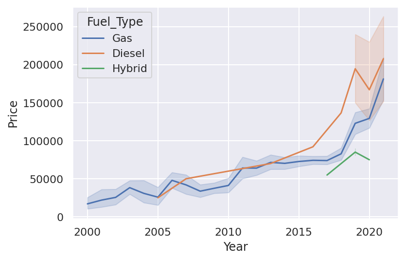

Origin : Country of importer (Gulf / Saudi / Other)
3
Color : Color of the used car
15
Options : Full Options / Semi-Full / Standard
3
Engine_Size : The engine size of used car
69
Fuel_Type : Fuel type size of used car (Diesel / Gas / Hybrid)
3
Gear_Type : Automatic / Manual
2
Mileage : The average distance that a vehicle can travel on (in km)
1694
Region : The region in which the used car was offered for sale
27
Price : Price of the used car (in SAR)
451
Negotiable : If True, the price is 0. This means the price is negotiable (not set)
1
Import the libraries & Data
Code
from tabulate import tabulateimport pandas as pd import matplotlib.pyplot as pltimport seaborn as sns import numpy as np import matplotlib as mplsauc = pd.read_csv('../data/UsedCarsSA_Clean_EN.csv')
Data Describtion for numerical variables before processing
Code
display(sauc.describe())print("\n")
Year
Engine_Size
Mileage
Price
count
8035.000000
8035.000000
8.035000e+03
8.035000e+03
mean
2014.097698
3.287729
1.491488e+05
5.369984e+04
std
5.757228
1.517747
3.474480e+05
7.198472e+04
min
1963.000000
1.000000
1.000000e+02
0.000000e+00
25%
2012.000000
2.000000
3.700000e+04
0.000000e+00
50%
2016.000000
3.000000
1.019600e+05
3.700000e+04
75%
2018.000000
4.400000
1.950000e+05
7.375000e+04
max
2022.000000
9.000000
2.000000e+07
1.150000e+06
Checking the null values
Code
display(sauc.isna().sum())print("\n")
Make 0
Type 0
Year 0
Origin 0
Color 0
Options 0
Engine_Size 0
Fuel_Type 0
Gear_Type 0
Mileage 0
Region 0
Price 0
Negotiable 0
dtype: int64
Check the duplicated rows and delete them
Code
duplicateOFRow = sauc[sauc.duplicated()] # check print('These are the duplicated rows : \n')display(duplicateOFRow) sauc = sauc.drop_duplicates() print("\n")
These are the duplicated rows :
Make
Type
Year
Origin
Color
Options
Engine_Size
Fuel_Type
Gear_Type
Mileage
Region
Price
Negotiable
2027
Ford
Taurus
2015
Other
Red
Full
3.5
Gas
Automatic
122000
Dammam
69000
False
3201
Ford
Taurus
2019
Other
Red
Semi Full
3.5
Gas
Automatic
108000
Dammam
97000
False
5070
Toyota
Camry
2013
Saudi
White
Full
2.5
Gas
Automatic
185000
Riyadh
0
True
Dropping the rows having price equal to zero
Code
# Dropping the rows having price equal to zerosauc = sauc[sauc['Price'] !=0]print('The data shape after the drop of the zeros', sauc.shape)print("\n")
The data shape after the drop of the zeros (5506, 13)
It is obvious that some of the values look too high to be taken into account when determining a car’s pricing. We made the decision to remove the rows with prices less than 7000 Riyals in order to avoid skewing the results.
Code
#Dropping the rows having price equal to zerosauc = sauc[sauc['Price'] >7000]print('The data shape after the drop', sauc.shape)print("\n")
The data shape after the drop (5385, 13)
Replace the Unknown value in the origin column by the mode
Code
# replace the unknown value in the column by the mode print('The current number of uniqe values is : 4')sauc['Origin'] = sauc['Origin'].apply( lambda x : x.replace('Unknown', 'Saudi') ) sauc['Origin'].nunique() print('The number of uniqe values After the change is : ' , sauc['Origin'].nunique() )print('The data shape after the cleaning', sauc.shape)print("\n")
The current number of uniqe values is : 4
The number of uniqe values After the change is : 3
The data shape after the cleaning (5385, 13)
Data Describtion for catagorical variables after processing
Data Describtion for numerical variables after processing
Code
display(sauc.describe())print("\n")
Year
Engine_Size
Mileage
Price
count
5385.000000
5385.000000
5.385000e+03
5.385000e+03
mean
2014.850882
3.186072
1.400462e+05
8.003392e+04
std
5.033234
1.467432
3.371271e+05
7.500884e+04
min
1963.000000
1.000000
1.000000e+02
7.500000e+03
25%
2013.000000
2.000000
4.800000e+04
3.650000e+04
50%
2016.000000
2.700000
1.020000e+05
5.900000e+04
75%
2018.000000
4.000000
1.810000e+05
9.500000e+04
max
2021.000000
9.000000
2.000000e+07
1.150000e+06
EDA
We will start with exploring some general informations about the data and proceeds with more in depth analysis to know which type of cars has the highest resale values
Price was positively skewed that’s why we showed the median.
What is The Most Famous Car Companies?
Code
# Visualizing the different car company names availableplt.style.use('ggplot')%config InlineBackend.figure_format ='retina'%matplotlib inlineplt.rcParams['figure.figsize'] = [20,8]ax = sauc['Make'].value_counts().plot(kind='bar', colormap ='BrBG')ax.title.set_text('Numbers of Resold Cars by Brand')plt.xlabel("Company")plt.ylabel("Count of Cars");
Insights:
Toyota, Hyundai, and Ford are among the most resold cars.
How does the price differ in each company and model year?
Code
y = sauc['Price']x = sauc['Make']colors = sauc['Year']plt.figure(figsize=(20, 5))plt.scatter(x,y, s=10, c=colors, alpha=0.7)plt.colorbar(orientation="vertical", label="Year")plt.title('Price in Each Company and Model Year', fontsize=20)plt.xlabel('Company Name')plt.ylabel('Price (Million SAR)')plt.xticks(rotation=90);
Insights:
This plot shows the price according to each company & year, Marcedes has the heighest price followed by Bentley & Rolls-Royce. not surprisingly, most price increase as the car’s year increase (The newer the car, the heigher the price).
The plot shows the top 20 cars. We have Accent and Land Cruiser and Camry on the top
What is the Avarage Price per Car Model?
Code
d =dict(sauc['Type'].value_counts().iloc[:20]) keysList =list(d.keys())ndf = pd.DataFrame(sauc[sauc['Type'].isin(keysList)].groupby(['Type'])['Price'].mean().sort_values(ascending =False))plt.figure(figsize=(20,5))ndf.plot.bar(colormap ='PuOr' )plt.title('Cars Model Average Price')plt.xticks(rotation=80)plt.xlabel('Car Model')plt.ylabel('Average Price');plt.ticklabel_format(useOffset=False, style='plain', axis='y')plt.show();
<Figure size 1440x360 with 0 Axes>
Insights:
Among the top 20 listed cars. Range Rover has the highest average price. If we looked at the most listed cars which are Accent and Land Cruiser and Camry. Accent has the second lowest average price close to Camry whereas the Land is in the third place
Which Regin have the Highest Mileage and Lowest Mileage?
Semi full option cars are the least sold cars, while most of the sold cars are full option, in general.
As the price increases, the sold cars are more likely to be full option.
Show the density distribution for the price based on the car origin
Code
plt.figure(figsize=(15,5))plt.subplot(1,2,1)plt.title('Origin Histogram')sns.countplot(x ='Origin' , data = sauc)plt.subplot(1,2,2)plt.title('Origin vs Price')sns.violinplot(x ='Origin' , y ='Price',data = sauc)plt.ticklabel_format(useOffset=False, style='plain', axis='y')plt.show()
Insights:
the plot show that the saudi cars price have a high density between 0-200K. The gulf cars have highest average
What is the average price for each available engine ?
Code
plt.style.use('ggplot')scaucpr = pd.DataFrame(sauc.groupby(['Engine_Size'])['Price'].mean().sort_values(ascending =False)).add_suffix('_Average').reset_index()plt.figure(figsize=(20,5))sns.scatterplot(x='Engine_Size', y ='Price_Average' , data = scaucpr)plt.title('Engine Size Average Price')plt.xlabel('Engine Size')plt.ylabel('Average Price');plt.ticklabel_format(useOffset=False, style='plain', axis='y')plt.show();
Insights:
Engine with a capacity between 6-7 have the highset average price
Does the engine class (Small if the engine < 5 else Large) proportion change in the new model cars?
Code
# make a new column that classifies the engine sizesauc['Engine_class'] = sauc['Engine_Size'].apply(lambda x : 'Small'if x <5else'Large') ax = sns.histplot(x ='Year' , hue ='Engine_class', data = sauc[sauc["Year"] >1990 ]) ax.set(xlabel='Cars model year', ylabel='Number of cars') plt.title('Cars Classication', fontsize=20);
Insights:
The cars listed in the website with a model from 2014 onward are domianted by small cars whereas the older cars have almost an equal propotion
What is the Price Behavior for Used Cars in Both the Fuel & Gear?
Code
plt.figure(figsize=(15,5))plt.subplot(1,2,1)plt.title('Fuel Histogram')sns.countplot(x ='Fuel_Type' , data = sauc)plt.subplot(1,2,2)plt.title('Fuel_Type vs Price')sns.boxplot(x ='Fuel_Type' , y ='Price',data = sauc)plt.ticklabel_format(useOffset=False, style='plain', axis='y')plt.show()
Insights:
98% of the listed cars are Gas cars. There is only 10 Hybrid cars but they have the highest median price and thier price range is higher
How does the fuel type change overtime? (Toyota as an example)
Code
cars_t = sauc.loc[(sauc['Make'] =='Toyota') & (sauc['Year'] >1999)]sns.set_theme(style="darkgrid")# Plot the responses for different events and regionssns.lineplot(x="Year", y="Price", hue="Fuel_Type", data=cars_t);

Insights:
As an example, we took the sample of Toyota cars (as Toyota has the higher frequency) from 2000 onward. We see that Diesel used cars had lower prices in 2005, but with the time it got higher than Gas used cars. Moreover, note the behavior of the Hybrid used cars.
Correlation matrix to show which variable affect the price for the overall dataset
Code
# first a general corr then a corr based on every car cmopany #cmap = sns.diverging_palette(230, 20, as_cmap=True)## Draw the heatmap#sns.heatmap(sauc.corr(), annot=True, cmap=cmap);
Insights:
The engine size and the model year have a similar positive effect and the model year has the highest effect on the price for the overall dataset
More analysis to see what is the variable that affect the price for the top car makers?
Code
# First we take the unique values in 'Make' and the count for them. # The following code will creat a list for the maker names and for the count and make it a dictmaker_name, cars_counts = np.unique(sauc['Make'],return_counts=True)d =dict(zip(maker_name,cars_counts))top = {}# Creat a new dict where we only have the top 12 cars makers as they represent 85% of the dataset for key, value insorted(d.items(), key=lambda item: item[1], reverse=True)[:12]: top[key] = value nCols=3# The number of columns that you wantnRows=4# The number of correspomding rows fig,axes = plt.subplots(nRows, nCols, figsize=(25,25))for ind,v inenumerate(top.keys()): cmap = sns.diverging_palette(230, 20, as_cmap=True) ax = sns.heatmap(sauc[sauc["Make"]== v ].corr(), annot=True, cmap=cmap,ax=axes.flatten()[ind]) ax.title.set_text(v) plt.show()
Insights:
The top 12 cars makers represent 85% from the dataset. The correlation shows that for 9 companies they follow tha same trend as the the overall dataset. In Toyota and Nissan, the engine size has the highest positive effect with the price, on the other hand, Honda engine size has a negative effect on the price.
Conclusion
Toyota is the most famous company and Aston Martin is the least famous.
Dammam has the highest average price compared with other cities.
White is the most popular car color unlike yellow color
The median price for the cars is 59000 SAR
The price increase as the model year increase, and the cars are more likely to be a full option.
The prices of Toyota cars with Diesel fuel increased overtime.
For the overall dataset, the model year has the highest effect on the price but for Toyota, Nissan it is the engine size